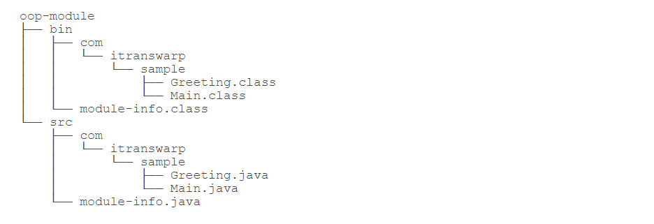
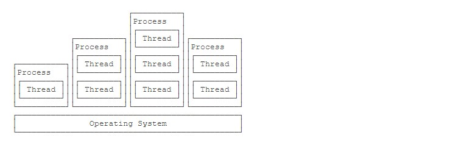
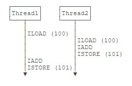
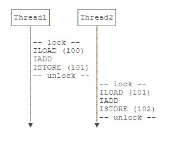

Java Inbox
→ 摘录自廖雪峰老师的 https://www.liaoxuefeng.com/wiki/1252599548343744
面向对象
模块
为什么需要模块？
.class 文件是 JVM 看到的最小可执行文件，jar 是用于存放 class 的容器，它并不关心 class 之间的依赖。
从Java 9开始引入了自带“依赖关系”的 class 容器 – 模块 。
如何编写模块呢？

仅仅在 src 目录下多了一个 module-info.java 这个文件，这就是模块的描述文件。如：
1: module hello.world { 2: requires java.base; // 可不写，任何模块都会自动引入java.base 3: requires java.xml; 4: }
*当我们使用模块声明了依赖关系后，才能使用引入的模块。
模块有什么用？
我们可以用它来打包 JRE ！
模块进一步隔离了代码的访问权限，只有它声明的导出的包，外部代码才被允许访问。
Maven
Maven 是一个 Java 项目管理和构建工具，它可以定义项目结构、项目依赖，并且用统一的方式进行自动化构建。
Maven 项目结构
多线程
线程和进程
进程和线程的关系就是：一个进程可以包含一个或多个线程，但至少会有一个线程。
操作系统调度的最小任务单位其实不是进程，而是线程。
相对进程来说，创建线程开销小、通信快（线程间通信就是读写同一个变量）。多进程的好处在于稳定性好，一个进程崩溃不会影响其他进程。
Java 语言内置了多线程的支持：一个 Java 程序实际上是一个 JVM 进程，JVM 进程用一个主线程来执行 main() 方法，在 main() 方法内部，我们又可以启动多个线程。此外，JVM 还有负责垃圾回收的其他工作线程等。
因此，对于大多数Java程序来说，我们说多任务，实际上是说如何使用多线程实现多任务。
Java多线程编程的特点又在于：
- 多线程模型是Java程序最基本的并发模型；
- 后续读写网络、数据库、Web开发等都依赖Java多线程模型。
创建新线程
要创建一个新线程非常容易，我们需要实例化一个 Thread 实例，然后调用它的 start() 方法：
1: public class Main { 2: public static void main(String[] args) { 3: Thread t = new Thread(); 4: t.start(); // 启动新线程 5: } 6: }
但是这个线程启动后实际上什么也不做就立刻结束了。
我们希望新线程能执行指定的代码，有以下几种方法：
- 从
Thread派生一个自定义类，然后覆写run()方法； - 创建
Thread实例时，传入一个Runnable实例； - 或用Java8引入的 lambda语法。
小结：
- Java用
Thread对象表示一个线程，通过调用start()启动一个新线程；- 一个线程对象只能调用一次
start()方法；- 线程的执行代码写在
run()方法中；- 线程调度由操作系统决定，程序本身无法决定调度顺序。
线程的状态
在Java程序中，一个线程对象只能调用一次 start() 方法启动新线程，并在新线程中执行 run() 方法。一旦 run() 方法执行完毕，线程就结束了。
如图所示，Java线程的状态有以下几种：
- New：新创建的线程，尚未执行；
- Runnable：运行中的线程，正在执行
run()方法的Java代码； - Blocked：运行中的线程，因为某些操作被阻塞而挂起；
- Waiting：运行中的线程，因为某些操作在等待中；
- Timed Waiting：运行中的线程，因为执行
sleep()方法正在计时等待； - Terminated：线程已终止，因为
run()方法执行完毕。
当线程启动后，它可以在 Runnable、Blocked、Waiting 和 Timed Waiting 这几个状态之间切换，直到最后变成 Terminated 状态，线程终止。
线程终止的原因有：
- 线程正常终止：
run()方法执行到return语句返回； - 线程意外终止：
run()方法因为未捕获的异常导致线程终止； - 对某个线程的 Thread实例调用
stop()方法强制终止（强烈不推荐使用）。
通过对另一个线程对象调用 join() 方法可以等待其执行结束,对已经运行结束的线程调用 join() 方法会立刻返回。
中断线程
main 线程通过调用 t.interrupt() 方法中断 t 线程，但是要注意， interrupt() 方法仅仅向 t 线程发出了“中断请求”，至于 t 线程是否能立刻响应，要看具体代码。
小结：
对目标线程调用
interrupt()方法可以请求中断一个线程，目标线程通过检测isInterrupted()标志获取自身是否已中断。如果目标线程处于等待状态，该线程会捕获到InterruptedException；目标线程检测到
isInterrupted()为true或者捕获了InterruptedException都应该立刻结束自身线程；通过标志位判断需要正确使用
volatile关键字；=volatile= 关键字解决了共享变量在线程间的可见性问题。
守护进程
守护线程是指为其他线程服务的线程。在JVM中，所有非守护线程都执行完毕后，无论有没有守护线程，虚拟机都会自动退出。
如何创建守护线程呢？方法和普通线程一样，只是在调用 start() 方法前，调用 setDaemon(true) 该线程标记为守护线程：
1: Thread t = new MyThread(); 2: t.setDaemon(true); 3: t.start();
在守护线程中，编写代码要注意：守护线程不能持有任何需要关闭的资源，例如打开文件等，因为虚拟机退出时，守护线程没有任何机会来关闭文件，这会导致数据丢失。
线程同步
当多个线程同时运行时，线程的调度由操作系统决定，程序本身无法决定。这个时候，有个单线程模型下不存在的问题就来了：如果多个线程同时读写共享变量，会出现数据不一致的问题。
多线程模型下，要保证逻辑正确，对共享变量进行读写时，必须保证一组指令以 原子方式 执行：即某一个线程执行时，其他线程必须等待。
*原子操作是指不能被中断的一个或一系列操作。
如，对于语句 n = n + 1; ，看上去是一行语句，实际上对应了 3 条指令：
ILOAD IADD ISTORE
✘
✔
通过加锁和解锁的操作，就能保证 3 条指令总是在一个线程执行期间，不会有其他线程会进入此指令区间。
即使在执行期线程被操作系统中断执行，其他线程也会因为无法获得锁导致无法进入此指令区间。只有执行线程将锁释放后，其他线程才有机会获得锁并执行。这种加锁和解锁之间的代码块我们称之为 临界区 （Critical Section） ，任何时候临界区最多只有一个线程能执行。
可见，保证一段代码的原子性就是通过加锁和解锁实现的。
Java程序使用 synchronized 关键字对一个对象进行加锁， synchronized 保证了代码块在任意时刻最多只有一个线程能执行。
如何使用 synchronized ：
- 找出修改共享变量的线程代码块；
- 选择一个共享实例作为锁；
- 使用
synchronized(lockObject) { ... }。
*因为 synchronized 代码块无法并发执行。此外，加锁和解锁需要消耗一定的时间，所以， synchronized 会降低程序的执行效率。
JVM 只保证同一个锁在任意时刻只能被一个线程获取，但两个不同的锁在同一时刻可以被两个线程分别获取。因此，使用 synchronized 的时候，获取到的是哪个锁非常重要。锁对象如果不对，代码逻辑就不对。
小结：
- 多线程同时读写共享变量时，会造成逻辑错误，因此需要通过
synchronized同步；- 同步的本质就是给指定对象加锁，加锁后才能继续执行后续代码；
- 注意加锁对象必须是同一个实例；
- 对 JVM 定义的单个原子操作不需要同步。